Together
About The Film
Together is a documentary short film about equity within the context of the Stop Asian Hate movement. The documentary showcases local Vancouver artists and creatives to get their perspective on how and what we can do individually and as a team to engage in the movement. In the documentary the interactive artwork of “Pom Pom Mirror” by Daniel Rozin https://vimeo.com/128375543 is analyzed and compared to the idea of equity. The aspects of equity, which involve individuals working together to achieve a greater cause, are compared to the mechanics behind interactive art. Just like the “Pom Pom Mirror” in order to display a message and create meaning, individual pieces must work together to form an art piece. Through the stories and perspectives of these Asian artists one can feel inspired to engage in equity to help the Asian community.
The film was created for a project in my Moving images class at SFU in collaboration with Andrew Ang Siong Boon, Andrea Ang Tsin Yin and Alex King. This project involved producing a short documentary on any topic to be compared and related to any existing interactive art work. It involved conducting interviews for the documentary and required both a final documentary and trailer. The trailer was edited by me and scored a grade of 1oo percent.
The Creation Process
Once the team had finalized the topic of our documentary it was time to acquire interviewee's for the documentary. I was in charge of seeking out potential local artists to interview. In order to find artists to interview I made use of Instagram to help me find local Vancouver Asian creatives who suit the criteria for the documentary.
As well, I was in charge of coordinating the interviews and communicating with the interviewees to set up times to shoot. Before shooting it was important for me to send each interviewee background information about the project and potential interview questions to help them prepare. That way at the time of shooting, everything would go as smooth as possible as the interviews had to be conducted in a timely matter to accommodate our interviewees' schedules.
I was responsible for writing the script of the documentary with 1 other team member. Although the content of the documentary is filled with interviews, it was still important for us to have a script to prepare the order of questions and give us a general feel as to what the sequence of the documentary would be. It was a bit challenging and felt odd to formulate a script when the content of the interview was open ended, however the script helped us to plan which order we would want the interview clips to be placed during the editing stage.
Before starting the writing of the script, I made sure to do some research on our interviewees to brainstorm what type of interview questions could be asked that relate to our theme of equity for the documentary. Along with coming up with personalized questions for each interviewee I also came up with a set of general questions for all interviewees to be asked.
For the general interview questions it was important for me to ensure that the questions would encourage answers that support the theme of the documentary. Therefore, when brainstorming interview questions I came up with 3 categories to organize specific questions. I came up with a set of questions to ask about each artist's perspective on the Stop Asian Hate movement and their background as an Asian creative. Then I came up with a set of questions that were more specific to applying the theme of equity to the context of the movement. Therefore hoping to encourage the topic of what we can do as a community to support the movement. Lastly, I created a category of questions to focus on relating the theme of equity to the artwork "Pom Pom Mirror" as that was a requirement of the assignment.
For this project I filmed some b-roll for the trailer on my iphone which also made it into the final documentary. I happened to visit the Chinatown in Victoria while working on the trailer and made use of the scenery for b-roll.
A requirement of this project was to create a trailer for the documentary and I was responsible for the editing of the trailer. I made use of Adobe's Premiere Pro to edit the trailer which involved colour correcting, adding and adjusting audio and creating a sequence that would excite the audience for the final documentary.
Before beginning to edit the trailer, I did some research on existing documentary trailers to inspire me and to get a feel for a style that suits a documentary. Doing this research beforehand helped me when making use of transition effects, cinematic transition sound effects and titling.
The process of editing the trailer also involved reviewing all the footage from the interviews and finding the defining moments that would showcase the documentary the best.
This project showed me the kinds of opportunities I want to take in the future. The process of organizing interviews and communicating with artists to be a part of the production taught me professionalism and what to expect when working with a production team. In addition, beyond the efforts I put in the pre production of seeking artists and organizing the technical documents for the interview, this project helped me to improve my editing skills. With being in charge of editing the trailer for the documentary, I was able to practice my skills with post production in a genre I have not dealt with before. This process taught me how sound design and transition effects can support the end goal of creating excitement in a viewer to watch the final film.
Images
 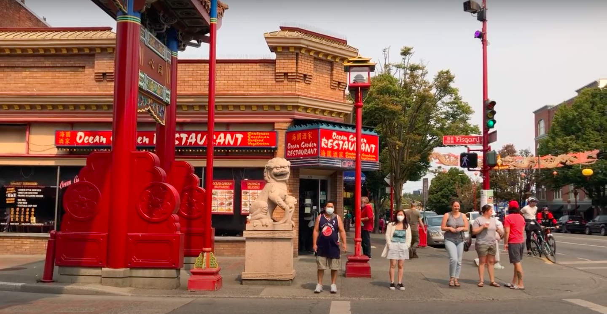
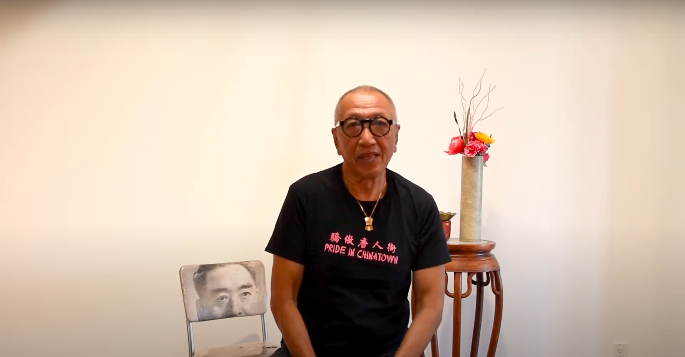
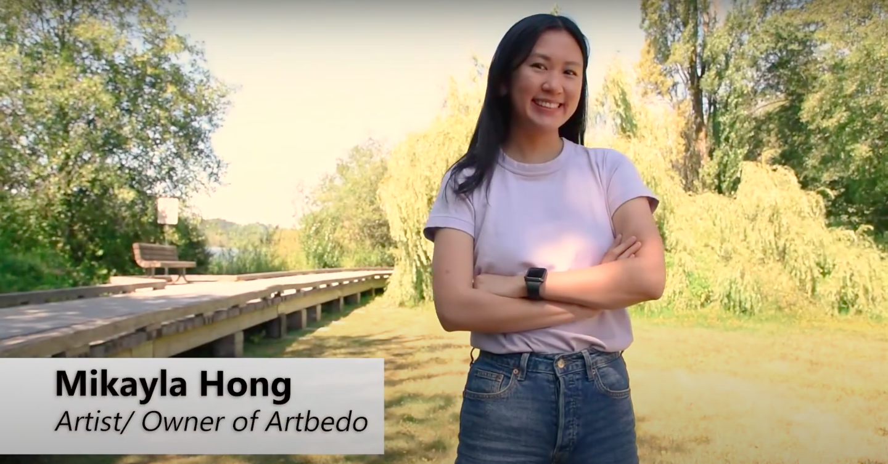
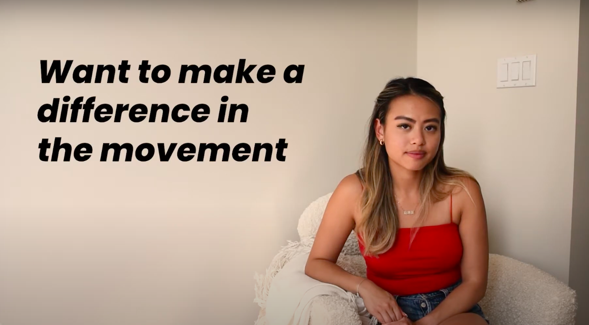
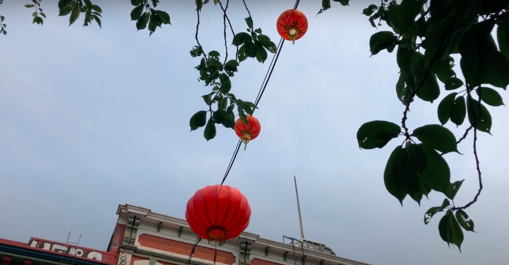
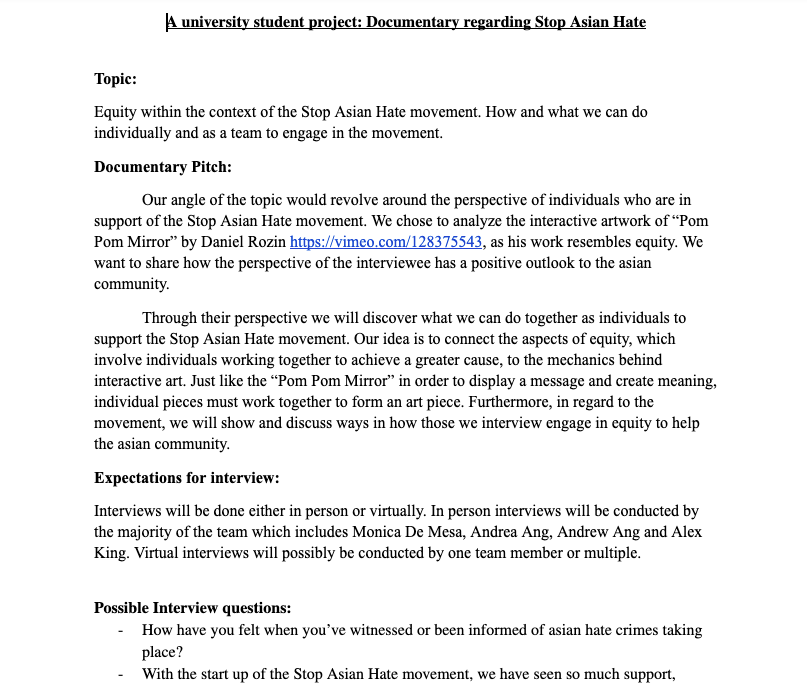
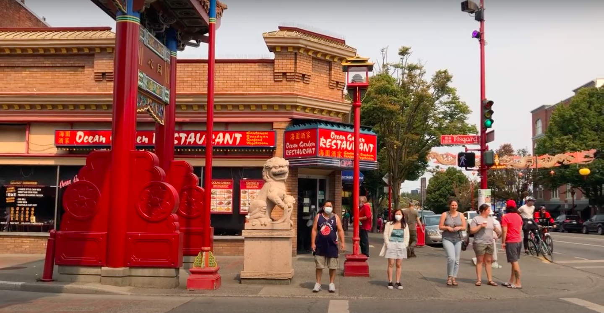
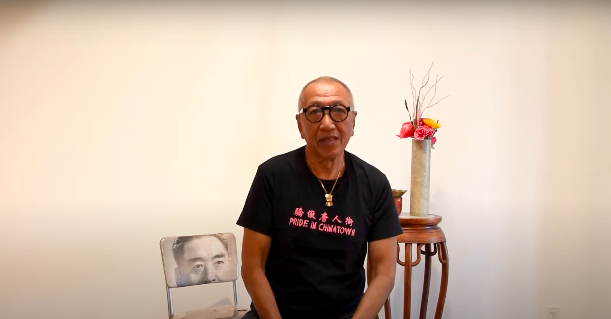
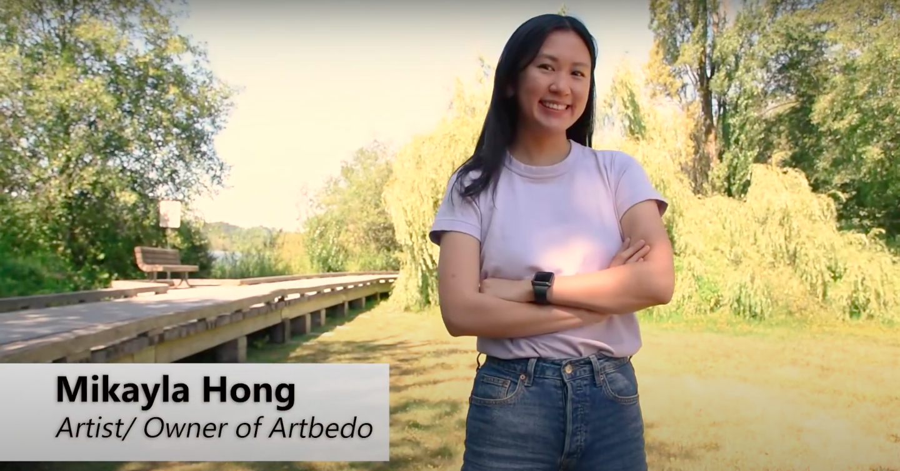
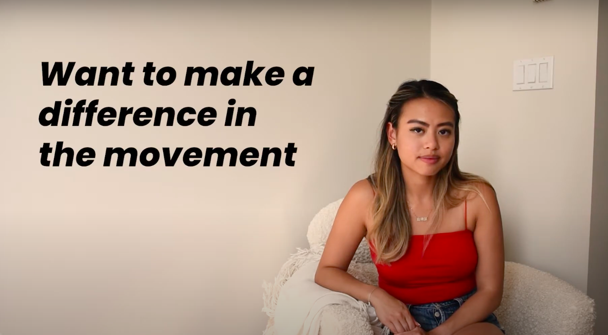
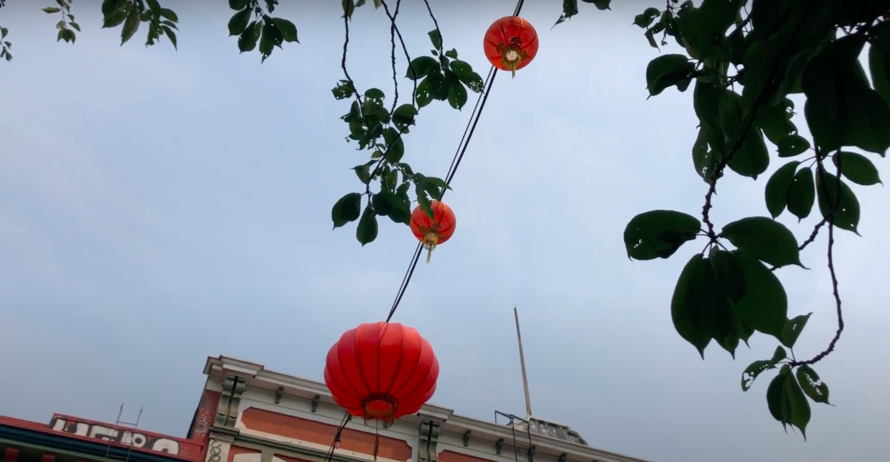
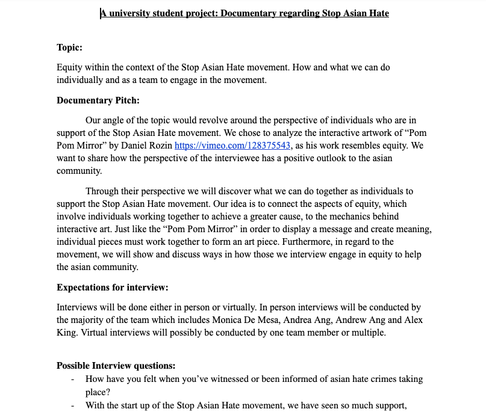